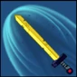
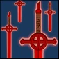

Finn's gameplay is based almost entirely around the auto attack reset you get from timing his Q immediately after starting an auto attack animation, if done correctly this can stack his passive twice or even three times under certain circumstances (see Advanced Tips.)
After a little bit of practice the timing becomes second nature, and you generally want to use it whenever you can. Finn's typical "combo" looks like this:
Outside of teamfighting, Finn's wave clear isnt very strong, but he is among the best when it comes to jungling, especially against the Hug Wolf, Grass Bear, and boss camps. Aim to farm these camps in the downtime between fights while any wizard champions on your team focus more on wave clearing.
Passive - Fury
Your passive can stack up to 3 times, increasing your damage against a single target. It is best to stay focused on one person at a time while playing Finn to maximize your damage using this passive
Q - Armored Attack
Finn's bread and butter, obviously used to utilize his extremely strong auto attack reset, but can also be used just for the armor and move speed to chase down that last hit for a kill, or just to run away.

W - Bombastic Dash
Finn's dash, keep in mind that it resets on kill or assist, and also adds it's own stack of your passive. It can also be used to go through smaller walls on the map for ambushing or retreat purposes.

E - The Ring!
Finn's only form of crowd control, the cooldown is very low but you will mostly use it to surprise other players while out of their sight, or for general zone control as opposed to its actual root.
Finn can sometimes get three auto attacks off of one Q instead of the normal two, to perform this you essentially just mash the key and sometimes it happens and sometimes it doesn't, it seems to be very similar to BMO's bug where they can stack their passive as the game loads in for the first time by mashing Q and W.
Finn can dash through the inner wall of the towers on both sides of the map, allowing him to either get out onto the map faster, or to retreat to safety. You can use this to get to the middle altar using your q to run up to the wall faster, and then dashing through it, if done correctly the only champions that can beat you there are ones who can go over the base wall in its entirely, but they all use up more important dueling resources than you to get there so you will generally be able to fight them off the point before the rest of the teams show up. If no one else shows up to the middle altar faster than you, just walk towards the enemy's half of the altar and ult, thus immediately preventing the vast majority of options the enemy team has to initiate on to mid. One more niche use for this is that you can dash into your opponents base the same way, steal their cyclops tears, and then dash out of the opposite side while running away, severely hindering their ability to sustain from poke or skirmishes throughout the early and mid game.
You can use your "combo" in reverse order, starting by using your W to dash onto the enemy in melee range, then auto attacking, pressing q for the reset, and then getting one last auto attack off for a near instant pop of your passive.
Finn is a very well rounded champion with few real weaknesses, despite his intended counters in blinds and stuns, he tends to at least do well in a game of equally skilled players. Finn fits well in most team compositions as a purely burst damage dive assassin or as either a bruiser or full tank, while still maintaining a high level of damage. Even in games with other extremely strong champions Finn usually doesnt have much to fear, he can beat almost any other champion in a duel as long as the players are of similar skill. The only reason Finn isn't a completely oppressive presence in the game is because of his matchup knowledge requirements and his relative difficulty to play well compared to other champions. While playing Finn the only champions you have to be wary of are Lich due to his popular defensive gameplay style with just too much CC for Finn to effectively initiate onto, and Rattleballs as he is arguably the only champion who is stronger in a duel.